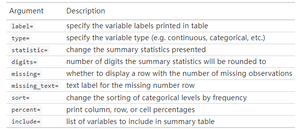
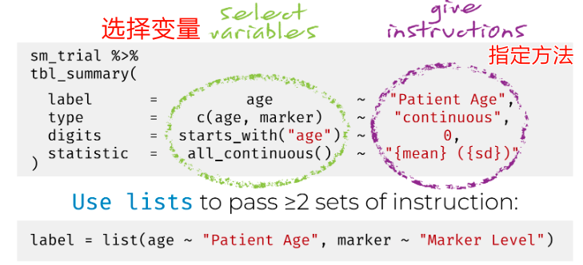
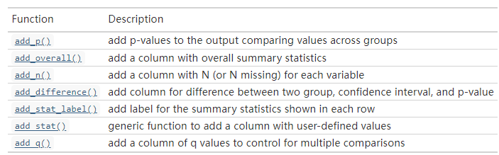
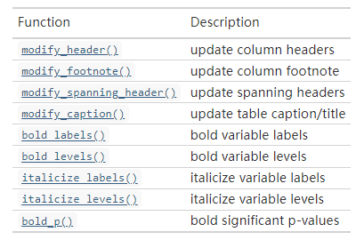

# 2选1
install.packages("gtsummary")
remotes::install_github("ddsjoberg/gtsummary")50 gtsummary绘制表格
在R语言中绘制表格的包我们介绍了非常多，除了专门绘制基线资料表的compareGroups/tableone/table1，还介绍了绘制普通表格的gt，以及扩展包gtExtras。
gtsummary包是专门用来画表格的，高度自定义的多种选项，快速绘制发表级表格。可用于总结汇总数据集、多种模型等。
- 快速绘制描述性统计表格、基线资料表(例如医学期刊常见的表1！) 。自动检测数据集中的连续、多分类和二分类变量，选择合适的描述性统计方法，还包括每个变量的缺失值。
- 绘制回归模型结果。自动识别常见的回归模型，如逻辑回归和Cox比例风险回归，会在表格中自动填充适当的列标题(即优势比和风险比)。
- 高度自定义的表格。字体字号、增加P值，合并单元格等，通通支持自定义。
- 联合
broom/gt/labelled等R包，可以直接生成发表级的结果，配合rmarkdown，可自定输出到Word、PDF、HTML等多种文件中。
功能十分强大，用好了就是1个顶3个！
50.1 安装
50.2 tbl_summary
自动计算描述性统计指标，支持连续型变量、分类变量，生成的表格支持自定义细节。
可用于绘制我们临床中常见的表1（基线资料表/三线表）！
library(gtsummary)
## #BlackLivesMatter
suppressPackageStartupMessages(library(tidyverse))使用自带的trial数据集进行演示，这个数据集也是临床中常见的数据类型。包含200个病人的基本信息，比如年龄、性别、治疗方式、肿瘤分级等，分为2组，一组用A药，另一组用B药。
# 查看一下数据结构
str(trial)
## tibble [200 × 8] (S3: tbl_df/tbl/data.frame)
## $ trt : chr [1:200] "Drug A" "Drug B" "Drug A" "Drug A" ...
## ..- attr(*, "label")= chr "Chemotherapy Treatment"
## $ age : num [1:200] 23 9 31 NA 51 39 37 32 31 34 ...
## ..- attr(*, "label")= chr "Age"
## $ marker : num [1:200] 0.16 1.107 0.277 2.067 2.767 ...
## ..- attr(*, "label")= chr "Marker Level (ng/mL)"
## $ stage : Factor w/ 4 levels "T1","T2","T3",..: 1 2 1 3 4 4 1 1 1 3 ...
## ..- attr(*, "label")= chr "T Stage"
## $ grade : Factor w/ 3 levels "I","II","III": 2 1 2 3 3 1 2 1 2 1 ...
## ..- attr(*, "label")= chr "Grade"
## $ response: int [1:200] 0 1 0 1 1 0 0 0 0 0 ...
## ..- attr(*, "label")= chr "Tumor Response"
## $ death : int [1:200] 0 0 0 1 1 1 0 1 0 1 ...
## ..- attr(*, "label")= chr "Patient Died"
## $ ttdeath : num [1:200] 24 24 24 17.6 16.4 ...
## ..- attr(*, "label")= chr "Months to Death/Censor"50.2.1 基本使用
- 数据类型自动检测（连续型变量或者分类变量）
- 如果列有属性值（label attributes），自动添加
- 自动添加脚注
# 选取部分数据，方便演示
trial2 <- trial %>% select(trt,age,grade)
trial2 %>% tbl_summary()| Characteristic | N = 2001 |
|---|---|
| Chemotherapy Treatment | |
| Drug A | 98 (49%) |
| Drug B | 102 (51%) |
| Age | 47 (38, 57) |
| Unknown | 11 |
| Grade | |
| I | 68 (34%) |
| II | 68 (34%) |
| III | 64 (32%) |
| 1 n (%); Median (IQR) | |
当然是支持分组比较的，添加P值不在话下！
trial2 %>% tbl_summary(by = trt) %>% add_p()| Characteristic | Drug A, N = 981 | Drug B, N = 1021 | p-value2 |
|---|---|---|---|
| Age | 46 (37, 59) | 48 (39, 56) | 0.7 |
| Unknown | 7 | 4 | |
| Grade | 0.9 | ||
| I | 35 (36%) | 33 (32%) | |
| II | 32 (33%) | 36 (35%) | |
| III | 31 (32%) | 33 (32%) | |
| 1 Median (IQR); n (%) | |||
| 2 Wilcoxon rank sum test; Pearson’s Chi-squared test | |||
50.2.2 自定义输出
超多自定义选项：

自定义输出表格外观：
trial2 %>%
tbl_summary(
by = trt, # 分组
# 根据变量类型选择显示方式，和case_when()的使用非常像哦
statistic = list(all_continuous() ~ "{mean} ({sd})",
all_categorical() ~ "{n} / {N} ({p}%)"),
# 控制小数点
digits = all_continuous() ~ 2,
# 列名
label = grade ~ "Tumor Grade",
# 缺失值
missing_text = "(Missing)"
) %>%
add_p()| Characteristic | Drug A, N = 981 | Drug B, N = 1021 | p-value2 |
|---|---|---|---|
| Age | 47.01 (14.71) | 47.45 (14.01) | 0.7 |
| (Missing) | 7 | 4 | |
| Tumor Grade | 0.9 | ||
| I | 35 / 98 (36%) | 33 / 102 (32%) | |
| II | 32 / 98 (33%) | 36 / 102 (35%) | |
| III | 31 / 98 (32%) | 33 / 102 (32%) | |
| 1 Mean (SD); n / N (%) | |||
| 2 Wilcoxon rank sum test; Pearson’s Chi-squared test | |||
根据变量类型选择显示方式，有多种实现方法，下面列出了支持的3种方式：
| 方法1 | 方法2 | 方法3 |
|---|---|---|
| all_continuous() ~ “{mean}” | c(“age”, “marker”) ~ “{mean}” | list(age = “{mean}”, marker = “{mean}”) |
| list(all_continuous() ~ “{mean}”) | c(age, marker) ~ “{mean}” | - |
| - | list(c(age, marker) ~ “{mean}”) | - |
官方贴心的给出了使用方法：

修改变量显示的名称也可以用同样的方法。
50.2.3 修改统计方法
可以为不同的列自定义不同的统计方法。
trial2 %>%
tbl_summary(
by = trt, # 分组
# 根据变量类型选择显示方式，和case_when()的使用非常像哦
statistic = list(all_continuous() ~ "{mean} ({sd})",
all_categorical() ~ "{n} / {N} ({p}%)"),
# 控制小数点
digits = all_continuous() ~ 2,
# 列名
label = grade ~ "Tumor Grade",
# 缺失值
missing_text = "(Missing)"
) %>%
add_p(test = list(age ~ "t.test", # 为不同的列选择不同的统计方法
grade ~ "kruskal.test"
),
pvalue_fun = ~style_pvalue(.x, digits = 2)
)| Characteristic | Drug A, N = 981 | Drug B, N = 1021 | p-value2 |
|---|---|---|---|
| Age | 47.01 (14.71) | 47.45 (14.01) | 0.83 |
| (Missing) | 7 | 4 | |
| Tumor Grade | 0.72 | ||
| I | 35 / 98 (36%) | 33 / 102 (32%) | |
| II | 32 / 98 (33%) | 36 / 102 (35%) | |
| III | 31 / 98 (32%) | 33 / 102 (32%) | |
| 1 Mean (SD); n / N (%) | |||
| 2 Welch Two Sample t-test; Kruskal-Wallis rank sum test | |||
除了添加P值外，还可以添加超多东西：

修改表格细节的选项：

一个简单的小例子：
trial2 %>%
tbl_summary(by = trt) %>%
add_p(pvalue_fun = ~style_pvalue(.x, digits = 2)) %>%
add_overall() %>%
add_n() %>%
modify_header(label ~ "**Variable**") %>%
modify_spanning_header(c("stat_1", "stat_2") ~ "**Treatment Received**") %>%
modify_footnote(
all_stat_cols() ~ "Median (IQR) or Frequency (%)"
) %>%
modify_caption("**Table 1. Patient Characteristics**") %>%
bold_labels()| Variable | N | Overall, N = 2001 | Treatment Received | p-value2 | |
|---|---|---|---|---|---|
| Drug A, N = 981 | Drug B, N = 1021 | ||||
| Age | 189 | 47 (38, 57) | 46 (37, 59) | 48 (39, 56) | 0.72 |
| Unknown | 11 | 7 | 4 | ||
| Grade | 200 | 0.87 | |||
| I | 68 (34%) | 35 (36%) | 33 (32%) | ||
| II | 68 (34%) | 32 (33%) | 36 (35%) | ||
| III | 64 (32%) | 31 (32%) | 33 (32%) | ||
| 1 Median (IQR) or Frequency (%) | |||||
| 2 Wilcoxon rank sum test; Pearson’s Chi-squared test | |||||
还可以和gt包连用。使用as_gt()函数转换为gt对象后们就可以使用gt包的函数了。
trial2 %>%
tbl_summary(by = trt, missing = "no") %>%
add_n() %>%
as_gt() %>% # 转换为gt对象
gt::tab_source_note(gt::md("*This data is simulated*"))
Characteristic
N
Drug A, N = 981
Drug B, N = 1021
Age
189
46 (37, 59)
48 (39, 56)
Grade
200
I
35 (36%) 33 (32%) II
32 (33%) 36 (35%) III
31 (32%) 33 (32%) This data is simulated 1 Median (IQR); n (%)
I
35 (36%) 33 (32%) II
32 (33%) 36 (35%) III
31 (32%) 33 (32%) This data is simulated 1 Median (IQR); n (%)
50.2.4 同一个变量展示多个统计量
对于连续型变量，可以在多行显示多个统计值，只要设置type = all_continuous() ~ "continuous2"即可。
trial2 %>%
select(age, trt) %>%
tbl_summary(
by = trt,
type = all_continuous() ~ "continuous2",
statistic = all_continuous() ~ c("{N_nonmiss}",
"{median} ({p25}, {p75})",
"{min}, {max}"),
missing = "no"
) %>%
add_p(pvalue_fun = ~style_pvalue(.x, digits = 2)) #修改P值小数点| Characteristic | Drug A, N = 98 | Drug B, N = 102 | p-value1 |
|---|---|---|---|
| Age | 0.72 | ||
| N | 91 | 98 | |
| Median (IQR) | 46 (37, 59) | 48 (39, 56) | |
| Range | 6, 78 | 9, 83 | |
| 1 Wilcoxon rank sum test | |||
50.2.5 交叉表
可以非常方便的绘制交叉表，临床上我们喜欢叫列联表~
trial %>%
tbl_cross(
row = stage, # 指定行
col = trt, # 指定列
percent = "cell"
) %>%
add_p()| Chemotherapy Treatment | Total | p-value1 | ||
|---|---|---|---|---|
| Drug A | Drug B | |||
| T Stage | 0.9 | |||
| T1 | 28 (14%) | 25 (13%) | 53 (27%) | |
| T2 | 25 (13%) | 29 (15%) | 54 (27%) | |
| T3 | 22 (11%) | 21 (11%) | 43 (22%) | |
| T4 | 23 (12%) | 27 (14%) | 50 (25%) | |
| Total | 98 (49%) | 102 (51%) | 200 (100%) | |
| 1 Pearson’s Chi-squared test | ||||
50.3 和compareGroups包进行比较
这么多画表格的包，这个很强，比gt强不少！但我还是喜欢用compareGroups包，因为简单，一句代码即可搞定，所以，必须比较下，哪个好用，尤其是在画基线资料表方面！
library(compareGroups)
data("regicor")
glimpse(regicor)
## Rows: 2,294
## Columns: 25
## $ id <dbl> 2265, 1882, 3000105616, 3000103485, 3000103963, 3000100883, 3…
## $ year <fct> 2005, 2005, 2000, 2000, 2000, 2000, 2000, 1995, 2005, 1995, 2…
## $ age <int> 70, 56, 37, 69, 70, 40, 66, 53, 43, 70, 54, 42, 54, 48, 68, 4…
## $ sex <fct> Female, Female, Male, Female, Female, Female, Male, Female, F…
## $ smoker <fct> Never smoker, Never smoker, Current or former < 1y, Never smo…
## $ sbp <int> 138, 139, 132, 168, NA, 108, 120, 132, 95, 142, 130, 99, 117,…
## $ dbp <int> 75, 89, 82, 97, NA, 70, 72, 78, 65, 78, 66, 60, 70, 73, 71, 8…
## $ histhtn <fct> No, No, No, No, No, No, Yes, No, No, No, No, Yes, No, No, Yes…
## $ txhtn <fct> No, No, No, No, No, No, Yes, No, No, No, No, No, No, No, Yes,…
## $ chol <dbl> 294, 220, 245, 168, NA, NA, 298, 254, 194, 188, 268, 116, 211…
## $ hdl <dbl> 57.00000, 50.00000, 59.80429, 53.17571, NA, 68.90000, 78.8900…
## $ triglyc <dbl> 93, 160, 89, 116, NA, 94, 71, NA, 68, 137, 128, 39, 144, 45, …
## $ ldl <dbl> 218.40000, 138.00000, 167.39571, 91.62429, NA, NA, 204.91000,…
## $ histchol <fct> No, No, No, No, NA, No, Yes, No, No, No, No, No, Yes, No, No,…
## $ txchol <fct> No, No, No, No, NA, No, No, No, No, No, No, No, No, No, No, N…
## $ height <dbl> 160.0, 163.0, 170.0, 147.0, NA, 158.0, 164.0, 154.5, 160.0, 1…
## $ weight <dbl> 64.0, 67.0, 70.0, 68.0, NA, 43.5, 79.2, 45.8, 53.0, 62.0, 79.…
## $ bmi <dbl> 25.00000, 25.21736, 24.22145, 31.46837, NA, 17.42509, 29.4467…
## $ phyact <dbl> 304.20000, 160.30000, 552.79121, 522.00000, NA, 386.95055, 47…
## $ pcs <dbl> 54.45500, 58.16500, 43.42900, 54.32500, NA, 57.31500, 59.6020…
## $ mcs <dbl> 58.91800, 47.99500, 62.58500, 57.90000, NA, 47.86900, 40.8420…
## $ cv <fct> No, No, No, No, NA, No, No, No, No, No, No, No, No, Yes, No, …
## $ tocv <dbl> 1024.88243, 2756.84851, 1905.96879, 1055.37962, NA, 3239.2407…
## $ death <fct> Yes, No, No, No, NA, No, Yes, No, No, No, No, No, No, No, No,…
## $ todeath <dbl> 1299.16343, 39.32629, 858.42203, 1833.07619, NA, 877.61155, 2…首先是compareGroups:
# 一样代码，太简单！不会写复杂代码的可以直接输出到Word里面修改
restab <- descrTable(year ~ ., data = regicor[,-1])
restab
##
## --------Summary descriptives table by 'Recruitment year'---------
##
## ______________________________________________________________________________________________
## 1995 2000 2005 p.overall
## N=431 N=786 N=1077
## ¯¯¯¯¯¯¯¯¯¯¯¯¯¯¯¯¯¯¯¯¯¯¯¯¯¯¯¯¯¯¯¯¯¯¯¯¯¯¯¯¯¯¯¯¯¯¯¯¯¯¯¯¯¯¯¯¯¯¯¯¯¯¯¯¯¯¯¯¯¯¯¯¯¯¯¯¯¯¯¯¯¯¯¯¯¯¯¯¯¯¯¯¯¯
## Age 54.1 (11.7) 54.3 (11.2) 55.3 (10.6) 0.078
## Sex: 0.506
## Male 206 (47.8%) 390 (49.6%) 505 (46.9%)
## Female 225 (52.2%) 396 (50.4%) 572 (53.1%)
## Smoking status: <0.001
## Never smoker 234 (56.4%) 414 (54.6%) 553 (52.2%)
## Current or former < 1y 109 (26.3%) 267 (35.2%) 217 (20.5%)
## Former >= 1y 72 (17.3%) 77 (10.2%) 290 (27.4%)
## Systolic blood pressure 133 (19.2) 133 (21.3) 129 (19.8) <0.001
## Diastolic blood pressure 77.0 (10.5) 80.8 (10.3) 79.9 (10.6) <0.001
## History of hypertension: <0.001
## Yes 111 (25.8%) 233 (29.6%) 379 (35.5%)
## No 320 (74.2%) 553 (70.4%) 690 (64.5%)
## Hypertension treatment: 0.002
## No 360 (83.5%) 659 (83.8%) 804 (77.8%)
## Yes 71 (16.5%) 127 (16.2%) 230 (22.2%)
## Total cholesterol 225 (43.1) 224 (44.4) 213 (45.9) <0.001
## HDL cholesterol 51.9 (14.5) 52.3 (15.6) 53.2 (14.2) 0.208
## Triglycerides 114 (74.4) 114 (70.7) 117 (76.0) 0.582
## LDL cholesterol 152 (38.4) 149 (38.6) 136 (39.7) <0.001
## History of hyperchol.: <0.001
## Yes 97 (22.5%) 256 (33.2%) 356 (33.2%)
## No 334 (77.5%) 515 (66.8%) 715 (66.8%)
## Cholesterol treatment: <0.001
## No 403 (93.5%) 705 (91.2%) 903 (87.2%)
## Yes 28 (6.50%) 68 (8.80%) 132 (12.8%)
## Height (cm) 163 (9.21) 162 (9.39) 163 (9.05) 0.003
## Weight (Kg) 72.3 (12.6) 73.8 (14.0) 73.6 (13.9) 0.150
## Body mass index 27.0 (4.15) 28.1 (4.62) 27.6 (4.63) <0.001
## Physical activity (Kcal/week) 491 (419) 422 (377) 351 (378) <0.001
## Physical component 49.3 (8.08) 49.0 (9.63) 50.1 (8.91) 0.032
## Mental component 49.2 (11.3) 48.9 (11.0) 46.9 (10.8) <0.001
## Cardiovascular event: 0.161
## No 388 (97.5%) 706 (95.3%) 977 (95.4%)
## Yes 10 (2.51%) 35 (4.72%) 47 (4.59%)
## Days to cardiovascular event or end of follow-up 1784 (1101) 1686 (1080) 1793 (1072) 0.099
## Overall death: <0.001
## No 369 (95.3%) 657 (89.0%) 949 (92.8%)
## Yes 18 (4.65%) 81 (11.0%) 74 (7.23%)
## Days to overall death or end of follow-up 1713 (1042) 1674 (1050) 1758 (1055) 0.252
## ¯¯¯¯¯¯¯¯¯¯¯¯¯¯¯¯¯¯¯¯¯¯¯¯¯¯¯¯¯¯¯¯¯¯¯¯¯¯¯¯¯¯¯¯¯¯¯¯¯¯¯¯¯¯¯¯¯¯¯¯¯¯¯¯¯¯¯¯¯¯¯¯¯¯¯¯¯¯¯¯¯¯¯¯¯¯¯¯¯¯¯¯¯¯然后是gtSummary:
regicor[,-1] %>%
tbl_summary(by = year,
type = all_dichotomous() ~ "categorical"
) %>%
add_overall() %>%
# 可以自定义每一列的统计方法，这里就不演示了
add_p(pvalue_fun = ~style_pvalue(.x, digits = 3)) %>%
# 添加spanner
modify_spanning_header(c("stat_1","stat_2","stat_3") ~ "**我随便起名**")| Characteristic | Overall, N = 2,2941 | 我随便起名 | p-value2 | ||
|---|---|---|---|---|---|
| 1995, N = 4311 | 2000, N = 7861 | 2005, N = 1,0771 | |||
| Age | 55 (46, 64) | 54 (44, 64) | 54 (45, 64) | 56 (47, 64) | 0.082 |
| Sex | 0.506 | ||||
| Male | 1,101 (48%) | 206 (48%) | 390 (50%) | 505 (47%) | |
| Female | 1,193 (52%) | 225 (52%) | 396 (50%) | 572 (53%) | |
| Smoking status | <0.001 | ||||
| Never smoker | 1,201 (54%) | 234 (56%) | 414 (55%) | 553 (52%) | |
| Current or former < 1y | 593 (27%) | 109 (26%) | 267 (35%) | 217 (20%) | |
| Former >= 1y | 439 (20%) | 72 (17%) | 77 (10%) | 290 (27%) | |
| Unknown | 61 | 16 | 28 | 17 | |
| Systolic blood pressure | 129 (116, 144) | 132 (118, 145) | 132 (118, 148) | 125 (115, 142) | <0.001 |
| Unknown | 14 | 3 | 11 | 0 | |
| Diastolic blood pressure | 80 (72, 86) | 78 (72, 84) | 80 (74, 88) | 79 (73, 87) | <0.001 |
| Unknown | 14 | 3 | 11 | 0 | |
| History of hypertension | <0.001 | ||||
| Yes | 723 (32%) | 111 (26%) | 233 (30%) | 379 (35%) | |
| No | 1,563 (68%) | 320 (74%) | 553 (70%) | 690 (65%) | |
| Unknown | 8 | 0 | 0 | 8 | |
| Hypertension treatment | 0.002 | ||||
| No | 1,823 (81%) | 360 (84%) | 659 (84%) | 804 (78%) | |
| Yes | 428 (19%) | 71 (16%) | 127 (16%) | 230 (22%) | |
| Unknown | 43 | 0 | 0 | 43 | |
| Total cholesterol | 215 (189, 245) | 225 (196, 254) | 222 (193, 250) | 209 (184, 238) | <0.001 |
| Unknown | 101 | 28 | 71 | 2 | |
| HDL cholesterol | 51 (42, 61) | 51 (41, 61) | 50 (41, 62) | 52 (43, 61) | 0.077 |
| Unknown | 69 | 30 | 38 | 1 | |
| Triglycerides | 97 (72, 136) | 94 (71, 136) | 98 (72, 133) | 98 (72, 139) | 0.762 |
| Unknown | 63 | 28 | 34 | 1 | |
| LDL cholesterol | 141 (116, 168) | 151 (127, 175) | 147 (120, 174) | 133 (110, 159) | <0.001 |
| Unknown | 168 | 43 | 98 | 27 | |
| History of hyperchol. | <0.001 | ||||
| Yes | 709 (31%) | 97 (23%) | 256 (33%) | 356 (33%) | |
| No | 1,564 (69%) | 334 (77%) | 515 (67%) | 715 (67%) | |
| Unknown | 21 | 0 | 15 | 6 | |
| Cholesterol treatment | <0.001 | ||||
| No | 2,011 (90%) | 403 (94%) | 705 (91%) | 903 (87%) | |
| Yes | 228 (10%) | 28 (6.5%) | 68 (8.8%) | 132 (13%) | |
| Unknown | 55 | 0 | 13 | 42 | |
| Height (cm) | 163 (156, 169) | 163 (157, 170) | 162 (155, 169) | 163 (156, 170) | 0.010 |
| Unknown | 35 | 8 | 15 | 12 | |
| Weight (Kg) | 73 (64, 82) | 72 (64, 80) | 73 (64, 83) | 73 (63, 83) | 0.300 |
| Unknown | 35 | 8 | 15 | 12 | |
| Body mass index | 27.2 (24.4, 30.4) | 26.5 (24.2, 29.5) | 27.6 (24.7, 30.7) | 27.2 (24.3, 30.4) | <0.001 |
| Unknown | 35 | 8 | 15 | 12 | |
| Physical activity (Kcal/week) | 304 (159, 522) | 390 (226, 617) | 347 (185, 574) | 262 (127, 443) | <0.001 |
| Unknown | 88 | 64 | 22 | 2 | |
| Physical component | 52 (45, 56) | 52 (45, 55) | 52 (44, 56) | 53 (45, 56) | 0.001 |
| Unknown | 240 | 34 | 123 | 83 | |
| Mental component | 51 (42, 56) | 52 (45, 57) | 53 (43, 57) | 50 (41, 55) | <0.001 |
| Unknown | 240 | 34 | 123 | 83 | |
| Cardiovascular event | 0.161 | ||||
| No | 2,071 (96%) | 388 (97%) | 706 (95%) | 977 (95%) | |
| Yes | 92 (4.3%) | 10 (2.5%) | 35 (4.7%) | 47 (4.6%) | |
| Unknown | 131 | 33 | 45 | 53 | |
| Days to cardiovascular event or end of follow-up | 1,718 (783, 2,691) | 1,728 (746, 2,767) | 1,617 (723, 2,596) | 1,775 (835, 2,723) | 0.096 |
| Unknown | 131 | 33 | 45 | 53 | |
| Overall death | <0.001 | ||||
| No | 1,975 (92%) | 369 (95%) | 657 (89%) | 949 (93%) | |
| Yes | 173 (8.1%) | 18 (4.7%) | 81 (11%) | 74 (7.2%) | |
| Unknown | 146 | 44 | 48 | 54 | |
| Days to overall death or end of follow-up | 1,668 (788, 2,663) | 1,557 (812, 2,689) | 1,609 (734, 2,549) | 1,734 (817, 2,713) | 0.249 |
| Unknown | 146 | 44 | 48 | 54 | |
| 1 Median (IQR); n (%) | |||||
| 2 Kruskal-Wallis rank sum test; Pearson’s Chi-squared test | |||||
貌似结果比compareGroups更好看…有些结果不太一样，因为默认方法不太一样。
一个是一行代码出表，另一个只需要多加几行代码就可以绘制发表级别的表，选哪个呢？